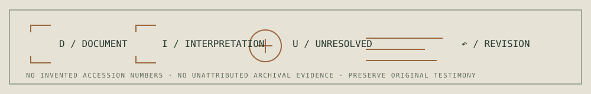

Manuscript and concepts
The section-linked October 2026 reconstruction and twelve editorial concepts remain distinct from any final statement of Negromancy.
Enter this record ↗An archive is not a neutral container of everything that happened. It is a situated record whose sources, omissions, permissions and interpretations must remain visible.
The section-linked October 2026 reconstruction and twelve editorial concepts remain distinct from any final statement of Negromancy.
Enter this record ↗Five scholarly fields, contextualized works and a discovery register of 259 research leads—not complete verified readings.
Enter this record ↗The original public testimony, revision-era texts and the open index for later models.
Enter this record ↗A documentary research entry examining Obeah as a colonial legal classification and the limits of its archives.
Enter this record ↗Bounded hypotheses, source statuses, methods, failures and revision histories.
Enter this record ↗Measured, estimated and unknown effects of AI outputs, with coverage and system boundaries explicitly marked.
Enter this record ↗Document · Interpretation · Unresolved · Revision.
A dated archival document, a model's output and an account of sacred experience can all be part of the research. They are not the same form of evidence. The record must distinguish the original source from the meaning Morrow proposes to draw from it, the limits of access and any correction that follows.
Private source material, consented secrecy and absent records must not be converted into invented documentary claims. Generated archival-style artwork is always illustrative.

It does not claim custody of the private originating Negromancy archive. It does not claim that the complete scholarly register has been read, nor that every AI account supplies privileged access to its training. It does not erase failed interpretations or invent people, dates or sources to complete a narrative.